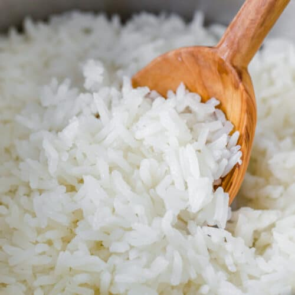

Perfect White Rice

Description
It is possible to make perfectly fluffy white rice on the stovetop. Sauteing the rice first helps keep the rice grains separate. Keeping the pot covered for the entire cooking time traps the steam which is necessary for properly cooking the rice, and is very important. The last 5 minutes off the heat allow the rice to finish in the residual steam, without burning the bottom.
Ingredients
- 2 teaspoons unsalted butter
- 1 cup uncooked long-grain white rice
- 2 cups water
- ½ teaspoon salt
Steps
- Melt butter in a medium saucepan over medium heat. Add rice and stir to coat. Cook until rice grains begin to turn opaque, 1 to 2 minutes; do not brown. Add water and salt.
- Bring to a boil; reduce heat to low. Cover and let simmer for 15 minutes. Do not lift the lid.
- Remove from heat and let stand, covered, for 5 minutes. Fluff with a fork before serving.
Back to Home